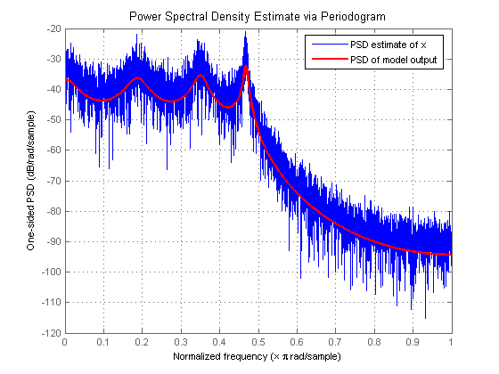
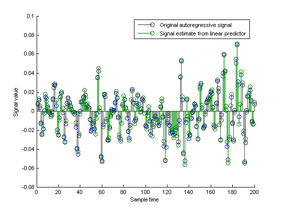

This demo is intended to show the relationship between autoregressive modeling and linear prediction. Linear prediction and autoregressive modeling are two different problems that can yield the same numerical results. In both cases, the ultimate goal is to determine the parameters of a linear filter. However, the filter used in each problem is different.
Copyright 1988-2004 The Mathworks, Inc.
In the case of linear prediction, the intention is to determine an FIR filter that can optimally predict future samples of an autoregressive process based on a linear combination of past samples. The difference between the actual autoregressive signal and the predicted signal is called the prediction error. Ideally, this error is white noise.
For the case of autoregressive modeling, the intention is to determine an all-pole IIR filter, that when excited with white noise produces a signal with the same statistics as the autoregresive process that we are trying to model.
Here we use the LPC function and an FIR filter simply to come up with parameters we will use to create the autoregressive signal we will work with. The use of FIR1 and LPC are not critical here. For example, we could replace d with something as simple as [1 1/2 1/3 1/4 1/5 1/6 1/7 1/8] and p0 with something like 1e-6. But the shape of this filter is nicer so we use it instead.
b = fir1(1024, .5); [d,p0] = lpc(b,7);
To generate the autoregressive signal, we will excite an all-pole filter with white gaussian noise of variance p0. Notice that to get variance p0, we must use SQRT(p0) as the 'gain' term in the noise generator.
randn('state',pi); % Allow reproduction of exact experiment u = sqrt(p0)*randn(8192,1); % White gaussian noise with variance p0
We now use the white gaussian noise signal and the all-pole filter to generate an AR signal.
x = filter(1,d,u);
Solving the Yule-Walker equations, we can determine the parameters for an all-pole filter that when excited with white noise will produce an AR signal whose statistics match those of the given signal, x. Once again, this is called autoregressive modeling. In order to solve the Yule-Walker equations, it is necessary to estimate the autocorrelation function of x. The Levinson algorithm is used then to solve the Yule-Walker equations in an efficient manner. The function ARYULE does all this for us.
[d1,p1] = aryule(x,7);
We now would like to compute the frequency response of the all-pole filter we have just used to model the AR signal x. It is well-known that the power spectral density of the output of this filter, when the filter is excited with white gaussian noise is given by the magnitude-squared of its frequency response multiplied by the variance of the white-noise input. One way to compute this output power spectral density is by using FREQZ as follows:
[H1,w1]=freqz(sqrt(p1),d1);
In order to get an idea of how well we have modeled the autoregressive signal x, we overlay the power spectral density of the output of the model, computed using FREQZ, with the power spectral density estimate of x, computed using the PERIODOGRAM spectrum object. Notice that the periodogram is scaled by 2*pi and is one-sided. We need to adjust for this in order to compare.
s = spectrum.periodogram; Hpsd = psd(s,x); plot(Hpsd); hold on; hp = plot(w1/pi,20*log10(2*abs(H1)/(2*pi)),'r'); % Scale to make one-sided PSD set(hp,'LineWidth',2); xlabel('Normalized frequency (\times \pi rad/sample)') ylabel('One-sided PSD (dB/rad/sample)') legend('PSD estimate of x','PSD of model output')
We now turn to the linear prediction problem. Here we try to determine an FIR prediction filter. We use LPC to do so, but the result from LPC requires a little interpretation. LPC returns the coefficients of the entire whitening filter A(z), this filter takes as input the autoregressive signal x and returns as output the prediction error. However, A(z) has the prediction filter embedded in it, in the form B(z) = 1- A(z), where B(z) is the prediction filter. Note that the coefficients and error variance computed with LPC are essentially the same as those computed with ARYULE, but their interpretation is different.
[d2,p2] = lpc(x,7); [d1.', d2.']
ans =
1.0000 1.0000
-3.5020 -3.5020
6.8764 6.8764
-9.1668 -9.1668
8.7773 8.7773
-6.0146 -6.0146
2.7617 2.7617
-0.6811 -0.6811
We now extract B(z) from A(z) as described above to use the FIR linear predictor filter to obtain an estimate of future values of the autoregressive signal based on linear combinations of past values.
xh=filter(-d2(2:end),1,x);
To get a feeling for what we have done with a 7-tap FIR prediction filter, we plot (200 samples) of the original autoregressive signal along with the signal estimate resulting from the linear predictor keeping in mind the one-sample delay in the prediction filter.
cla stem([x(2:end),xh(1:end-1)]); xlabel('Sample time'); ylabel('Signal value'); legend('Original autoregressive signal','Signal estimate from linear predictor') axis([0 200 -0.08 0.1])
The prediction error power (variance) is returned as the second output from LPC. Its value is (theoretically) the same as the variance of the white noise driving the all-pole filter in the AR modeling problem (p1). Another way of estimating this variance is from the prediction error itself:
p3 = norm(x(2:end)-xh(1:end-1),2)^2/(length(x)-1);
All of the following values are theoretically the same. The differences are due to the various computation and approximation errors herein.
[p0,p1,p2,p3]
ans =
1.0e-005 *
0.5127 0.5517 0.5517 0.5192